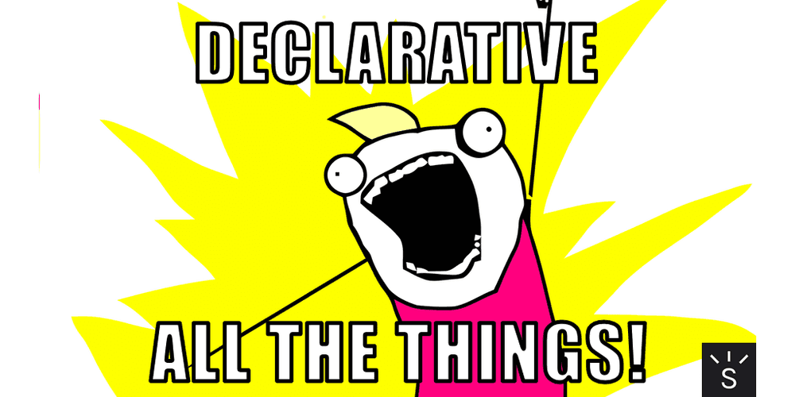
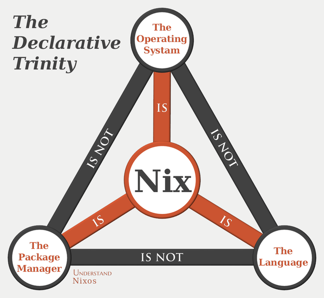
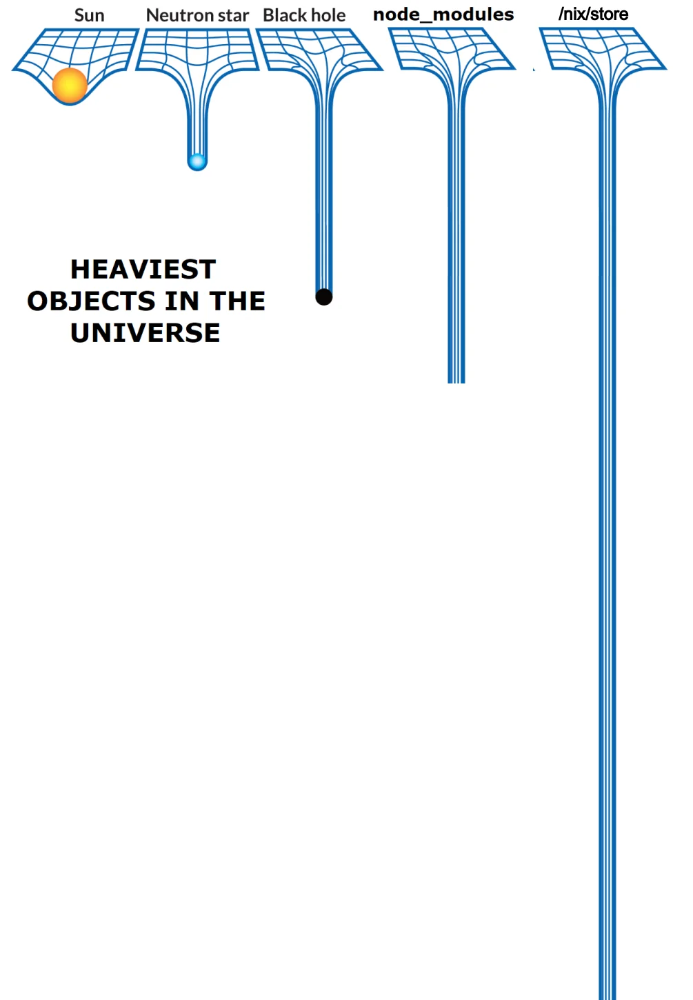
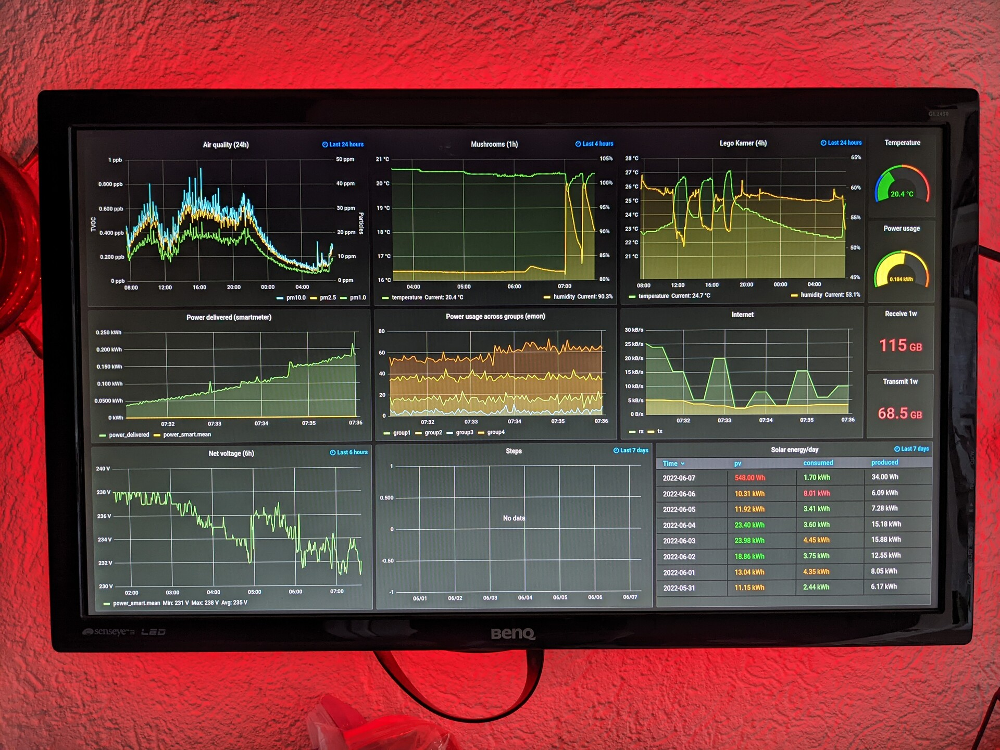
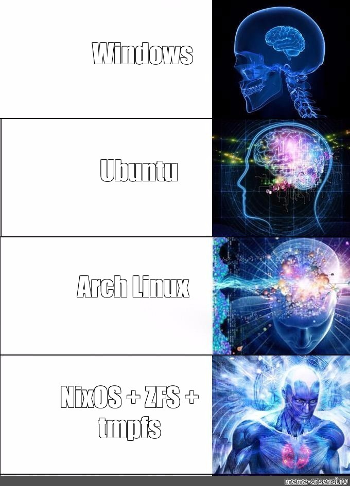

stdenv.mkDerivation {
name = "hello-world";
buildCommand = let message = "Hello world!"; in ''
echo '#!${pkgs.bash}/bin/bash' > $out
echo 'echo "${message}"' >> $out
chmod +x $out
'';
}
A structure that defines an executable or script that takes some inputs and produces an output.
stdenv.mkDerivation {
name = "hello-world";
buildCommand = let message = "Hello world!"; in ''
echo '#!${pkgs.bash}/bin/bash' > $out
echo 'echo "${message}"' >> $out
chmod +x $out
'';
}
$ nix-build hello.nix
/nix/store/74vhgn2qs91n9q4yws0qp4jbxq1aplpp-hello-world
$ cat result
#!/nix/store/4bwbk...m2i-bash-interactive-5.3p9/bin/bash
echo "Hello world!
Input addressed
The output name is a hash of the name, version, builder and names of all inputs (so their hashes).
Fixed output
Downloadable files for which we can know the hash before the build (eg. fetchFromGitHub or local ./src)
/nix/store
builtins.derivationstdenv.mkDerivationbuildGoModulebuildRustPackagebuildPythonApplicationbuildNpmPackagewriteTextFile{ lib, fetchFromGitHub, buildGoModule }:
buildGoModule rec {
name = "acme-dns";
version = "2.0.2";
src = fetchFromGitHub {
owner = "joohoi";
repo = "acme-dns";
rev = "v${version}";
hash = "sha256-tjVI+CaQTN1SB/RkTg0CJ1o9azb2ULwR1uKK5fJZ8fw=";
};
vendorHash = "sha256-n3icQQkdA0nCkvthsFsUTrYg0B3t8hROL4QXgBQRbSg=";
}
git version
# git version 2.53.0
nix-shell -p git --run "git --version" --pure -I nixpkgs=https://github.com/NixOS/nixpkgs/tarball/2a601aafdc5605a5133a2ca506a34a3a73377247
# git version 2.33.1
nix-shell -p git --run "git --version" --pure -I nixpkgs=https://github.com/NixOS/nixpkgs/tarball/18.03
# git version 2.16.2
nix-shell -p git --run "git --version" --pure -I nixpkgs=https://github.com/NixOS/nixpkgs/tarball/15.09
# git version 2.5.2
/nix/store paths are hashed, so how do we find executables?
cowsay hello world | lolcat
# Command not found..
nix-shell --command zsh -p cowsay lolcat
cowsay hello world | lolcat
# Running programs once
nix-shell -p cowsay --run "cowsay Nix"
pkgs.mkShellNoCC {
packages = with pkgs; [
cowsay
lolcat
];
GREETING = "Hello, Nix!";
shellHook = ''
echo $GREETING | cowsay | lolcat
'';
}
pkgs.symlinkJoin {
name = "profile";
paths = with pkgs; [
cowsay
lolcat
];
}
Summary

Operating system build on top of Nix and Nixpkgs.
{
imports = [ ./hardware-configuration.nix ];
networking.hostName = "mymachine";
time.timeZone = "Europe/Amsterdam";
users.users.myuser = {
extraGroups = [ "wheel" "networkmanager" ];
isNormalUser = true;
};
environment.systemPackages = with pkgs; [ testdisk ];
services.openssh.enable = true;
}
{
options = {
myModule.enable = lib.mkEnableOption "Enable Module";
};
config = lib.mkIf cfg.enable {
environment.systemPackages = with pkgs; [ vim ];
environment.etc."vimrc".text = "...";
}
}
Basically a module does two things:

https://c0deaddict.github.io/building-a-kiosk-using-go-2022/
All configured through NixOS services.
